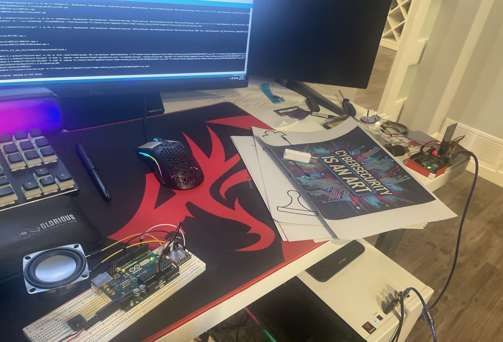
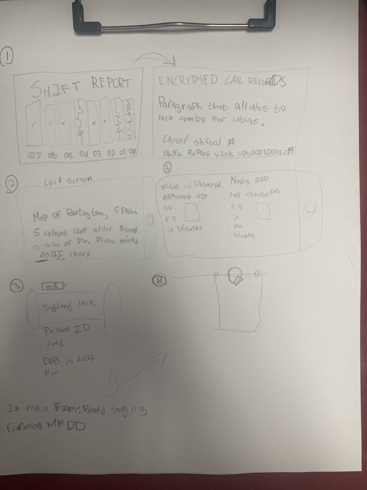
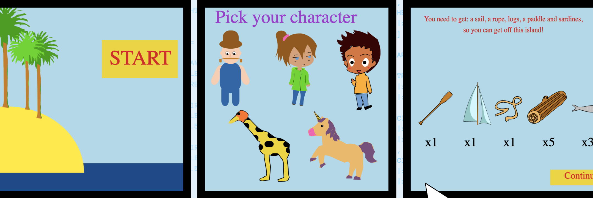
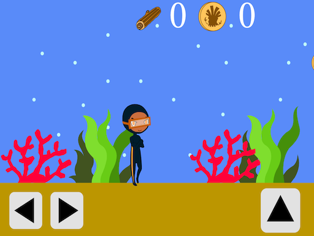

D&D Club
I DM’d a three-session campaign for my high school D&D club, which gave me experience planning encounters, pacing sessions, and adapting to player choices.
Game design has been one of my favourite hobbies for a while. I enjoy creating experiences that are fun, interactive, and rewarding to figure out, whether that means designing puzzles, running tabletop games, or helping test games in development.
To celebrate me and my classmates going to university, I created an escape room in my house
for them to play. I themed the escape room around the programs friends were taking,
resulting in an escape room where players would need to stop a cybersecurity attack on a
hospital, before the systems went offline!
I designed all of the puzzles to use electronics and locks I already owned. This meant I
had to design the escape room without many physical locks. However, by wiring and programming
Arduinos, and creating Python scripts to run on computers, I created 10 engaging puzzles, requiring
players to decode messages using a phoenetic alphabet, decrypt messages with substitution ciphers,
scan RFID cards in the correct order, and more.


I have worked with McMaster Start Coding (formerly MacOutreach)
as an intern game developer and later a mentor. During one summer internship,
I worked with more than 20 other game designers and developers over 4 weeks to create a
math learning game for elementary school students.
Escape Math Island is a multiplayer game, where students need to collect resources to
build a boat and escape the island! I helped brainstorm ideas for minigames, island design,
and took a leading role in creating "Underwater Exploration", a minigame where students had
to battle creatures using their math skills in order to collect sunken logs to create the boats'
hull!


I DM’d a three-session campaign for my high school D&D club, which gave me experience planning encounters, pacing sessions, and adapting to player choices.
I’ve also alpha/beta tested games like Splitgate 2 and Minecraft Servers (MCC Island and Hypixel SkyBlock), which helped me think more about game balance and player experience.